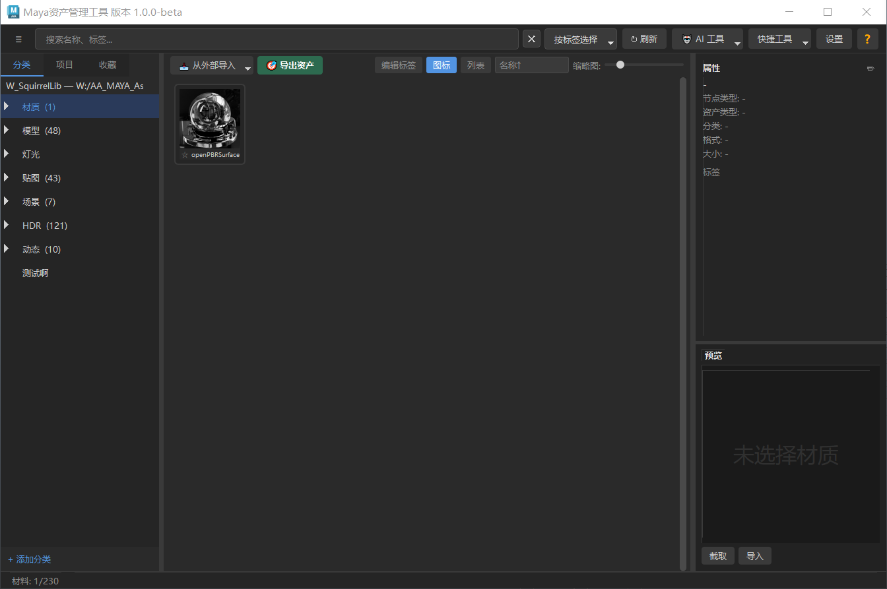
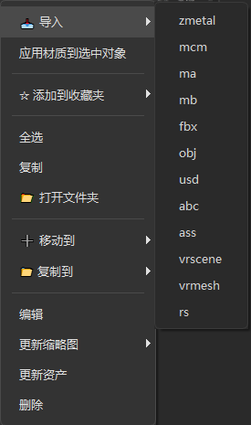

MaterialManagementPro 使用帮助

1. 插件整体结构
MaterialManagementPro 是一款面向 Maya 2022 ~ 2026 的材质与资产管理插件（插件文件夹名为 squirrel_asset_manager），界面支持中英文切换，安装后可从 Maya 工具栏 / 状态行按钮一键启动。
功能简介
- 统一资产格式 .zasset：一个文件夹封装元数据、缩略图、材质、灯光、几何体、贴图与关联文件，一个文件夹即一个完整资产。
- 六大子库：材质 / 模型 / 贴图 / 灯光 / 场景 / HDR（另支持自定义子库），每个子库可自定义分类层级。
- 双库架构：Category 长期积累库 + Project 项目专属库，资产完全隔离，互不影响。
- 多格式导出：几何体 ma / mb / fbx / obj / usd，缓存 abc，渲染器代理 ass / rs / vrscene / vrmesh，以及专属节点格式 zmetal / zlight / mcm。
- 三种导出模式：单资产 / 全自动 / 半自动；三种缩略图来源：截屏工具 / Maya 拍屏 / 渲染图（配合时间轴可合成 MP4 动图）。
- 收集关联文件：自动拷贝缓存（abc / vdb 等）、代理（ass / vrmesh 等）与 Maya 引用文件到资产内，支持帧序列全量复制。
- 材质完整重建：.zmetal 在场景中重建完整着色网络；.zlight 为跨渲染器灯光预设（Arnold / V-Ray / Redshift / Maya 原生）；.mcm 按顶点/面/边拓扑特征自动匹配赋材质。
- 变体与版本管理：支持 LOD 精度、版本、变体材质，右键「更新资产」可追加 LOD / 创建新版本 / 完全替换。
- AI 智能分析：基于 Ollama 本地视觉模型自动识别资产类型 / 名称 / 分类 / 标签，可一键应用。
- 个性化定制：右键菜单、双击命令、导出默认格式、常用标签与分类均可在设置窗口配置并持久保存。
- 版本支持：兼容 Maya 2022 / 2023 / 2024 / 2025 / 2026（含中文版 Maya），核心模块按 Python ABI 自动加载对应版本。
双库架构
| 标签页 | 用途 | 存储位置 |
|---|---|---|
| Category 库 | 长期积累的分类素材库，按类别整理 | 系统级目录 AssetLibrary/category_library/ |
| Project 库 | 当前项目专属资产，按项目隔离 | 项目内 AssetLibrary/project_library/ |
两个库完全独立，资产不能跨库拖拽或复制。
六大子库
每个库下包含 6 个子库：材质、模型、贴图、灯光、场景、HDR。每个子库可自定义分类层级。
资产格式
所有资产统一为 .zasset 文件夹格式，内含元数据（meta.json）、缩略图（thumb.sicon / thumb.mp4）、材质数据（node.zmetal）、灯光数据（node.zlight）、几何体（node.ma/fbx/abc...）、贴图（textures/ 目录）和可选的关联文件（associated/）。一个文件夹即一个完整资产。
2. 导出资产
导出是将 Maya 场景中的材质、模型或物体打包为 .zasset 资产的过程。点击 "导出资产" 按钮打开导出对话框（详细格式说明见对话框中的 "?" 帮助）。
2.1 三种导出模式
| 模式 | 适用场景 | 行为 |
|---|---|---|
| 单资产 | 选 1 个或多个物体合并为 1 个资产 | 弹出对话框 → 指定名称/分类 → 交互截图 → 导出。不自动隐藏未选中物体，由用户手动隔离视图 |
| 全自动 | 选 N 个物体每个独立为资产 | 首资产交互取景 → 后续自动复用截图区间 → 全部导出。自动独显+框显模型 |
| 半自动 | 选 N 个物体每个独立导出 | 每个资产弹出截图 UI → 手动确认 → 下一个。自动独显+框显模型 |
2.2 三种缩略图来源
| 来源 | 速度 | 质量 | 适合 |
|---|---|---|---|
| 截屏工具 | 最快 | 视口截图 | 模型、贴图等大多数资产 |
| Maya 拍屏 | 较快 | 视口 playblast | 需要动画预览的资产 |
| 渲染图 | 最慢 | Arnold 渲染 | 高质量材质/场景 |
2.3 支持的导出格式
| 类别 | 格式 | 说明 |
|---|---|---|
| 几何体 | ma / mb / fbx / obj / usd | 标准建模格式，.ma/.mb 导出时引用保持不被烘焙 |
| 缓存 | abc (Alembic) | 动画缓存，支持时间轴和关键帧范围 |
| 代理 | ass / rs / vrscene / vrmesh | Arnold / Redshift / V-Ray 渲染器代理格式 |
| 节点 | .zmetal / .zlight / .mcm | 材质节点预设 + 灯光预设 + 材质映射（拓扑匹配） |
| 贴图 | textures/ | 默认勾选，将材质关联贴图打包到资产内。取消则不打包 |
2.4 收集关联文件
导出对话框右侧顶部新增「收集关联文件」分区，勾选后自动扫描选中物体的关联节点并复制到 associated/ 目录：
| 类别 | 支持的节点 | 收集内容 |
|---|---|---|
| 缓存 | AlembicNode / gpuCache / cacheFile / VRayVolumeGrid / aiVolume / RedshiftVolumeShape | .abc .gpu .mc .vdb 体积缓存 |
| 代理 | aiStandIn / VRayProxy / VRayMesh / VRayScene / RedshiftProxyMesh / mayaUsdProxyShape | .ass .vrmesh .vrscene .rs .usd 文件 |
| 引用 | Maya reference 节点 | .ma/.mb 引用源文件（仅收集选中对象所属引用） |
#### 格式）和 VRayVolumeGrid（# 格式）自动识别帧序列并逐帧全量复制。2.5 时间轴动画导出
三种帧范围：当前帧（静帧）、时间轴（播放范围）、关键帧（物体关键帧范围）。时间轴/关键帧对 abc/usd/ass/rs/vrmesh 生效。渲染图 + 时间轴逐帧合成 MP4（⚠️ 可能耗时数分钟，Maya 暂时无响应属正常）。
3. 导入资产

3.1 从外部文件导入
- 工具栏 "导入" → "从文件导入"（或 "从文件夹导入"）
- 选择 Maya 文件或贴图文件，自动创建
.zasset添加到当前分类 - 导入文件夹时按名称自动分组，每组对应一个 .zasset
3.2 从库导入到场景
右键资产弹出菜单：
| 菜单项 | 效果 |
|---|---|
| 导入到场景 | 自动选择最合适的格式导入 |
| 导入 → .zmetal | 重建完整着色网络（节点、属性、连接、贴图）。材质名保持原名 |
| 导入灯光 → 选择渲染器 | 从 .zlight 重建灯光节点网络（含贴图/IES/HDR），支持 Arnold / V-Ray / Redshift / Maya 原生四选导入 |
| 导入 → .mcm | 导入材质 + 自动匹配赋予选中物体（见 3.3） |
| 导入 → .ma/.fbx/.obj/... | 按指定格式导入几何体 |
| 导入 → .ass/.rs/.vrscene/.vrmesh | 创建渲染器代理引用节点 |
| 导入几何体 | （有变体的资产）按 LOD 精度/版本导入几何体 |
| 🔍 预览节点 | 在场景中预览 .zmetal 或 .ma 节点内容 |
3.3 MCM 材质匹配
.mcm 记录物体拓扑特征（顶点数、面数、边数），导入时通过三维特征精确匹配，自动赋予材质。
- 先导入 .zmetal（重建材质网络）
- 计算选中物体顶点/面/边数
- 在 .mcm 中查找三维特征精确匹配的原物体
- 将材质自动赋予选中物体（含面级分配）
3.4 资产管理操作
- 复制/粘贴：跨分类粘贴。必须通过插件菜单
- 重命名：右侧属性面板修改后回车。不要直接改 .zasset 文件夹名
- 删除：二次确认
- 导出 .zasset：复制到指定文件夹用于跨库迁移或备份
- 更新资产：修改模型后右键"更新资产"可追加 LOD、创建新版本或完全替换
- 🧠 AI 分析缩略图：右键 → AI 分析缩略图，自动识别资产类型/名称/分类/标签
4. AI 智能分析
基于 Ollama 本地视觉模型（qwen3-vl:8b），对资产缩略图进行智能分析，自动生成：
- 易读名 — 资产的中文友好名称
- 建议分类 — 根据图像内容推荐子分类
- 标签 — 材质/颜色/用途等关键词标签
- 注释 — 简短描述
- 选中资产 → 工具栏 "🤖 AI 工具" → 选择模型/语言/审核选项 → 开始分析
- 或右键资产缩略图 → "🧠 AI 分析缩略图"
- 分析完成后弹出结果窗口，可编辑审查
- 勾选 "移动到分析出的分类"（默认勾选）：应用时自动将资产移动到 AI 建议的分类目录
- 点击 "应用" 写入元数据/移动资产
ollama pull qwen3-vl:8b。支持中文/英文分析。5. 常见问题
❌ 手动复制 .zasset 文件夹
复制的资产在插件中不显示。正确：右键 → 复制 → 粘贴。
❌ 直接重命名 .zasset
资产消失。正确：属性面板修改名称后回车。
❌ 删除插件文件夹
分类下资产集体消失。正确：插件内逐个删除。
❌ 跨库拖拽
Category 和 Project 独立。正确：导出 .zasset → 目标库导入。
❌ 时间轴 + 渲染图后 Maya 卡死
正常渲染过程，等待完成。急用选拍屏。
❌ 导入 abc/obj 无材质
选中物体 → 右键 → 导入 → .mcm（资产须含 .mcm）。
❌ MCM 匹配失败
顶点/面/边数与原模型不一致（可能三角化/合点过）。确保拓扑完全一致。
❌ 导入后贴图路径错误
重新导出该资产（贴图自动重定向到项目 sourceimages 目录）。
❌ 导出的 .ma 文件巨大
正常。引用对象在导出时保持引用关系（preserveReferences），不会烘焙到文件。如需烘焙引用内容，在 Maya 中先导入引用（File → Import Reference）。
❌「收集关联文件」没收集到代理
确保物体确实连接了缓存/代理节点。V-Ray 需对应 VRayMesh/VRayScene 节点，Redshift 需 RedshiftProxyMesh，USD 需 mayaUsdProxyShape。